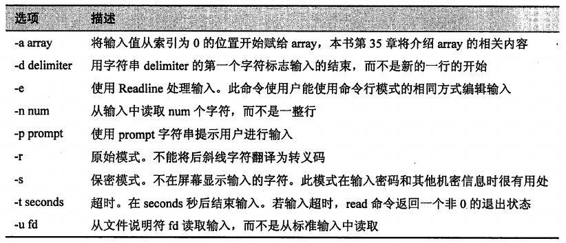

1. 其他命令
1.1. exit
在终端中使用，可以关闭当前会话
在 shell 脚本中使用，用于结束当前脚本
- exit 命令接受一个单独的可选参数, 它将成为脚本的退出状态。
- 当不传递参数时, 退出状态默认为 0。
exit
1.2. echo
display a line of text
- 显示一行文本。把文本参数内容打印到标准输出
echo -n '123456' # -n 选项用于抑制末尾输出新行字符
1.3. clear
clear the terminal screen
- 清屏
1.4. history
GNU History Library
- 显示历史列表的记录
history | less
history | grep text
1.4.1. 历史记录扩展
使用
!进行历史记录扩展- shell 提供的一种专门用于扩展历史记录项的字符
- 通过按 Tab 将命令展开
示例

1.5. xargs
build and execute command lines from standard input
- 从标准输入中建立、执行命令行
xargs ls # 用户输入文件夹名，ls 列出其中的内容
ls *.txt | xargs cat # 输出所有 txt 文件的内容
1.6. export
- export 命令告诉 shell，将本 shell 中的某个变量导出使子进程也可用
.
- "." 命令和 source 命令相同, 都是 shell 内置命令, 用来读取一个指定的 shell 命令文件, 并将其看做是像从键盘中输入的一样。
1.7. source
- 参考
.
1.8. read
从标准输人读取输入值
内嵌命令 read 的作用是读取一行标准输入。此命令可用于读取键盘输入值或应用重定向读取文件中的一行。
read 命令的语法
read [-options] [variable...]
语法中 options 为一条或多条可用的选项, 而 variable 则是一到多个用于存放输入值的变量。若没有提供任何此类变量, 则由 shell 变量 REPLY 来存储数据行。
read 选项

常用选项
- 使用 -p 选项来显示提示符。
- 使用 -t 与 -s 选项, 可以写出读取"秘密"输入的脚本, 此脚本若一定时间内没有完成输入, 会造成超时。
基本上, read 命令将标准输入的字段值分别赋给指定的变量。
示例
read v1
read v1 v2
当输入的值少于变量数时，多余的变量将被赋值为空字符串。
当输入的值多于变量数时，最后的变量将包含所有的多余值。
如果 read 命令之后没有变量, 则会为所有的输入分配一个 shell 变量：REPLY。
使用 IFS 间隔输入字段
- 通常 shell 会间隔提供给 read 命令的内容。
- 这也就意味着, 在输入行, 由一到多个空格将多个单词分隔成为分离的单项, 再由 read 命令将这些单项赋值给不同的变量。
- 此行为是由 shell 变量 IFS(Internal Field Separator) 设定的。IFS 的默认值包含了空格、制表符和换行符, 每一种都可以将字符彼此分隔开。
- 可以通过改变 IFS 值来控制 read 命令输入的间隔方式。
- 如, 文件 /ete/passwd 的内容使用冒号作为字段之间的间隔符。将 IPS 的值改为单个冒号即可使用 read 命令读取 /etc/passwd 文件的内容, 并成功将各字段分隔为不同的变量。
shell 允许在命令执行之前对一到多个变量进行赋值, 这些赋值操作会改变接下来所执行命令的操作环境。但是赋值的效果是暂时性的, 只有在命令执行周期内有效。
示例
IFS=":" read user pw uid gid name home shell <<< "$file_info"
# 等价于
OLD_IFS="$IFS"
IFS=":"
read user pw uid gid name home shell <<< "$file_info"
IFS="$OLD_IFS"
# 显然，将变量赋值语句置于执行命令前，是更为简洁的方法。
- 操作符 "<<<" 象征一条嵌入字符串。嵌入字符串与嵌入文档类似, 只不过更为筒短, 它包含的是一条字符串。
# 嵌入字符串可以用于给 read 命令传入字符串。
read user pw uid gid name home shell <<< "$file_info"
1.9. sleep
delay for a specified amount of time
- 延迟指定的时间，单位为秒
sleep 3 # 3 秒后，命令成功返回(退出状态为 0)
1.10. bc
An arbitrary precision calculator language
一个专门的计算器程序。支持任意精度。
bc 程序读取一个使用类 C 语言编写的程序文件, 并执行它。
bc 脚本可以是一个单独的文件, 也可以从标准输入中读取。
bc 语言支持很多功能, 包括变量、循环以及由程序员自定义的函数。
详解参考
字符串和数字
1.11. mkfifo
make FIFOs (named pipes)
创建命名管道
示例
# 创建
mkfifo pipe1
# 查看
ls -l pipe1
# 输出
ls -l > pipe1
# 输入
cat < pipe1
# 上述命令必须在同一目录执行，因为命名管道本身也是一种文件